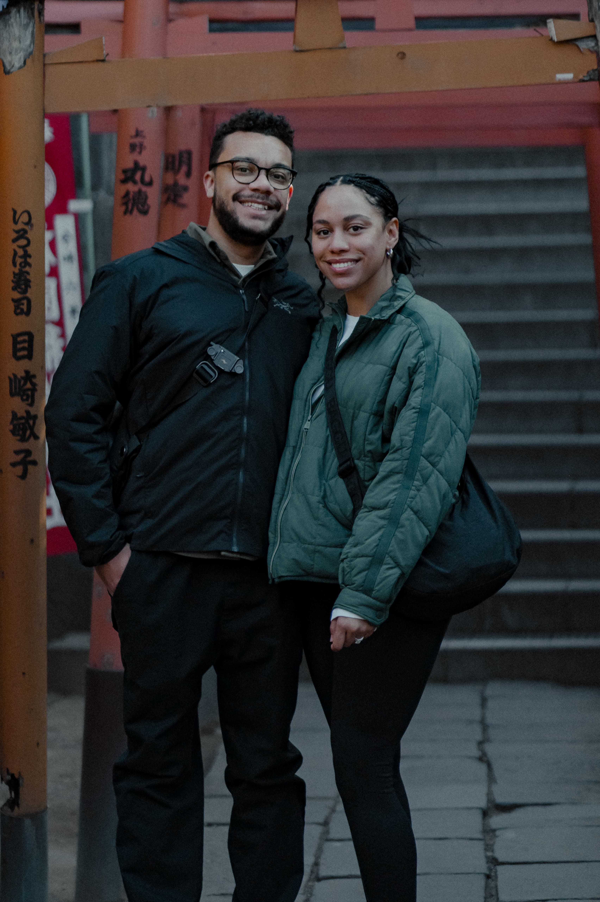
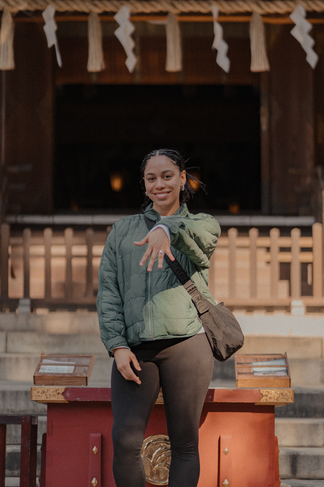
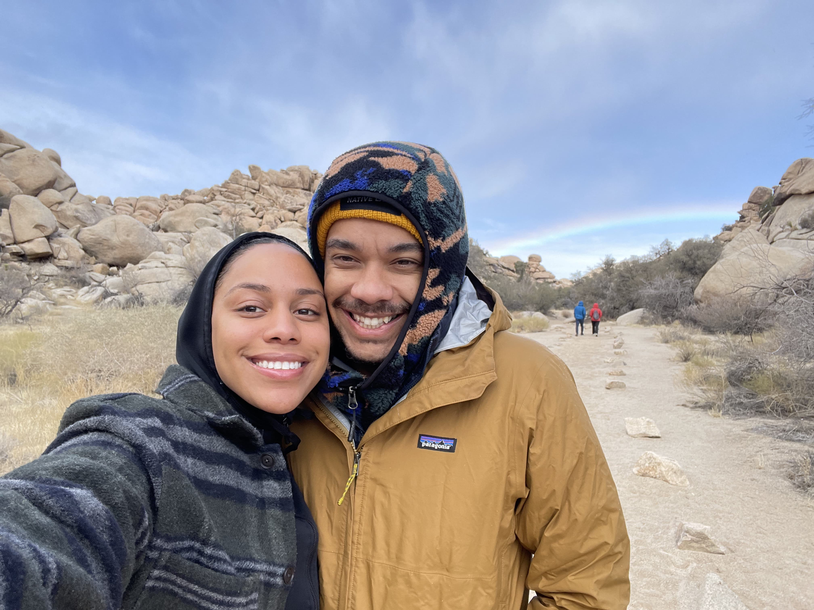
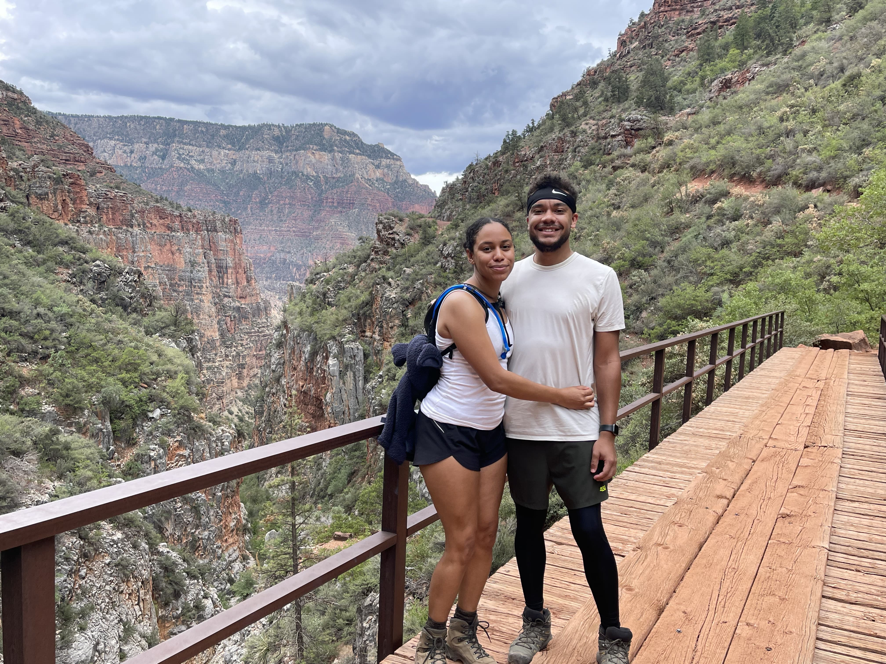

Our Story
It started in Phoenix back in 2021. We were both just visiting the city at the time, but Nathan decided to make the move, and eventually convinced Deztiny to stick around with him instead of moving back to LA.
Our first date was technically for coffee, but the real highlight was a card game that turned into a serious match. We realized pretty quickly just how competitive we both are.
We made things official on a camping trip deep inside the Grand Canyon, and a few years later, we shipped our lives across the country to Chicago.
When it came time to propose, Nathan chose the Lincoln Park Conservatory. It’s a perfect bit of nature inside the city, and since it's right next to the wedding venue, you should all definitely check it out this weekend!



